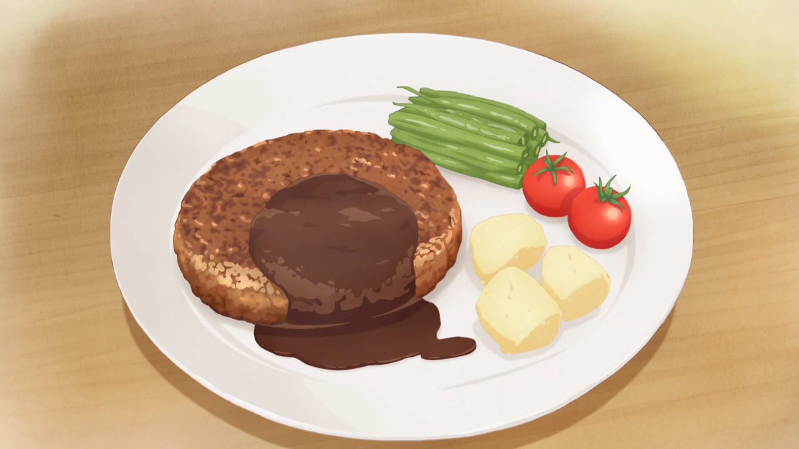

My First Hamburg Steak

Description
This is an amazing Japanese hamburg steak dish. Easy to make, it's perfect for a beginner chef to test their skills.
Ingredients
- 400g (.88lb) Ground meat
- 1.5 medium onions
- 1 egg
- 20g (0.7 oz) bread crumbs
- Salt/Pepper/Nutmeg/Oil as needed
This recipe assumes you're using 70/30 or 60/40 beef/pork ground meat.
Steps
-
Add a dash of salt to a minced onion and sauté it slowly over low heat until it turns light brown, then
chill. Mince half an onion and leave it raw.*Heating the onion in a microwave will shorten your cooking time.
-
Add a pinch of salt to the still-chilled ground meat in a bowl and mix thoroughly until it begins to stick. *Not
mixing thoroughly will cause it to lose shape and leak juices later.
-
Once the meat begins to stick, add the bread crumbs, egg, raw onions from (1), cooked onions, pepper, and nutmeg
(1-2
dashes), and mix. Split the mixture in fourths and make them into 1.5cm (0.6 in) thick patties by tossing them
from palm
to palm to get any air out of them. (Put some oil on your palms to help keep the patties from sticking to them.)
-
If you have time, refrigerate the formed patties for about 30 minutes, letting them sit. *They'll lose umami and
fat
while cooking if the patties are warm. So, cool them off.
-
Heat a frying pan with some oil, then begin cooking the patties over medium-low heat. *Cooking them over high
heat
will cause them to shrink. When the surface against the pan is firm, cook on low heat for 3 minutes. Once the
edge
turns white, flip them and cook for another three minutes.
-
Turn the heat off, then cover with a lid or aluminum foil and let sit for 2-3 minutes to allow the heat to
penetrate
the patty. Turn the heat back on, then cook for another 2 or so minutes over low heat.
-
Pierce the patty with a skewer. If the juice runs clear, the patties are done cooking. Cook them over high heat
for 15 more seconds to sear them, then you're finished!
If red liquid comes out when you skewer a patty, flip thw patties again and let them cook for a little longer.